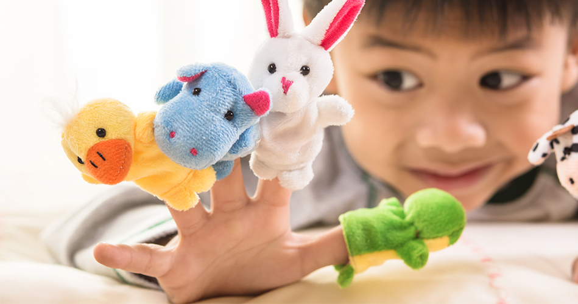

Drama and puppetry spark imagination, empathy, and confidence—giving every child a stage for creative expression and social growth.
← Back to HomeDrama and puppetry ignite imagination, allowing children to learn about emotions and stories. Caganaga and Kalmis (2015) found puppets enhance participation in Cyprus kindergartens, essential between 0-8 years. Drama provides confidence and verbal expression through role-play, bringing imagination to life. For educators, it's an engaging way of learning a child's inner world, advancing social interaction. Using drama and puppetry ensures creativity, paving the way for expressive communication and collaboration.
Theories like Piaget's play-based learning suggest that drama builds intellectual capacities by imitation. Albiach (2023) agrees, noticing Spanish educators value puppets as vehicles for the expression of feelings. There are different perspectives—some consider drama as free play, others as an official art. Caganaga and Kalmis (2015) highlight cultural impacts on puppet use, showing how setting interprets creative development. This blend of theory and application calls for adaptable teaching, accommodating each child's development from infancy to age 8.
Drama and puppetry demand simple yet effective resources. Scraps of cloth, wooden figures, and cardboard sets intrigue children. 0-2-year-olds engage with soft hand puppets that enable imitation. Simple skit props for 2-3-year-olds and puppet stages for 3-5-year-olds are preferred. With 6-8 years, digital story apps add depth. Technologies like video record performances but over-reliance on them can limit live interaction. Teachers must select safe, age-proscribed resources, balancing traditional and digital resources to enable creative play.
These evidence-based activities reveal the manner in which drama and puppetry support creativity regardless of age.